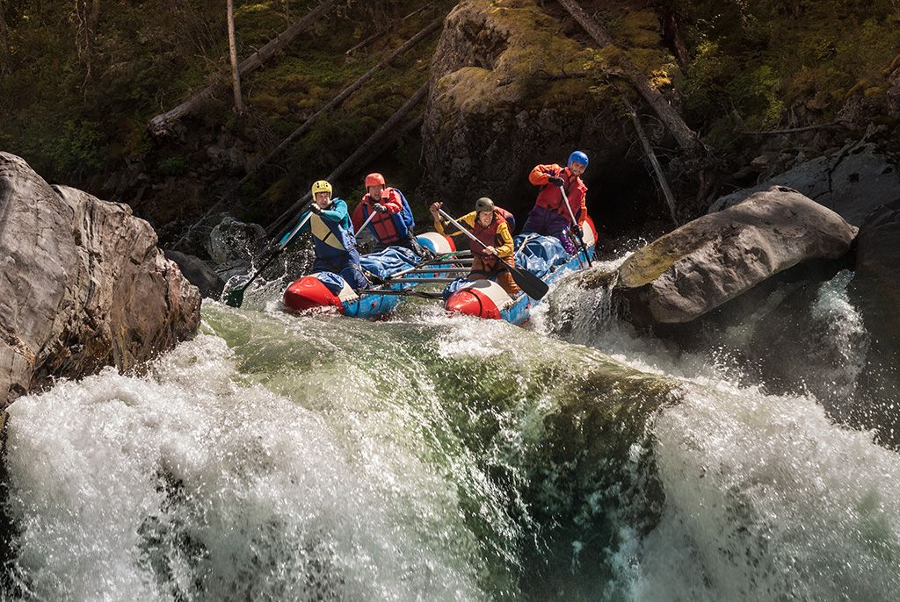
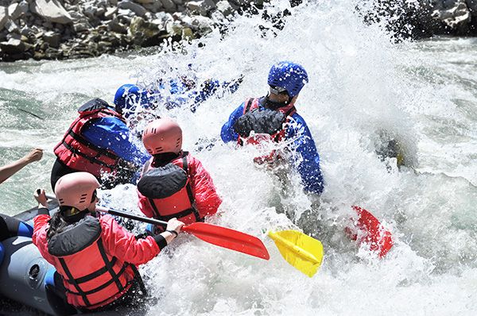

Águas Tranquilas
Perfeito para iniciantes e famílias. Um trajeto suave de corredeiras leves (classe I e II), ideal para sentir o ritmo do rio com total segurança. Crianças a partir de 8 anos são bem-vindas.


Do primeiro contato com as águas bravas às descidas mais radicais, temos um roteiro para cada nível de coragem. Todos os passeios incluem guia certificado, equipamento de segurança e aquele frio na barriga inesquecível.
Reserve seu passeio
Perfeito para iniciantes e famílias. Um trajeto suave de corredeiras leves (classe I e II), ideal para sentir o ritmo do rio com total segurança. Crianças a partir de 8 anos são bem-vindas.

Para quem já tem alguma experiência. Corredeiras de classe III e IV, com ondas fortes, manobras técnicas e muita adrenalina ao longo de 12 km de pura emoção entre cânions.

Nosso roteiro mais desafiador. Corredeiras de classe IV e V para aventureiros experientes que buscam o limite. Exige preparo físico e briefing avançado de segurança antes da partida.
| Passeio | Nível | Classe | Duração | Preço |
|---|---|---|---|---|
| Águas Tranquilas | Iniciante | I – II | 2 horas | R$ 180 |
| Corredeira Selvagem | Intermediário | III – IV | 3 horas | R$ 280 |
| Descida Extrema | Avançado | IV – V | 4 horas | R$ 390 |